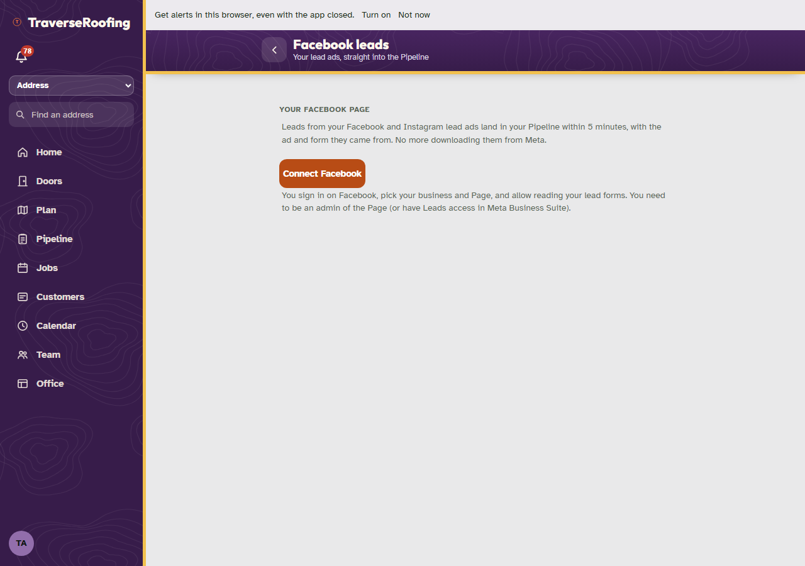
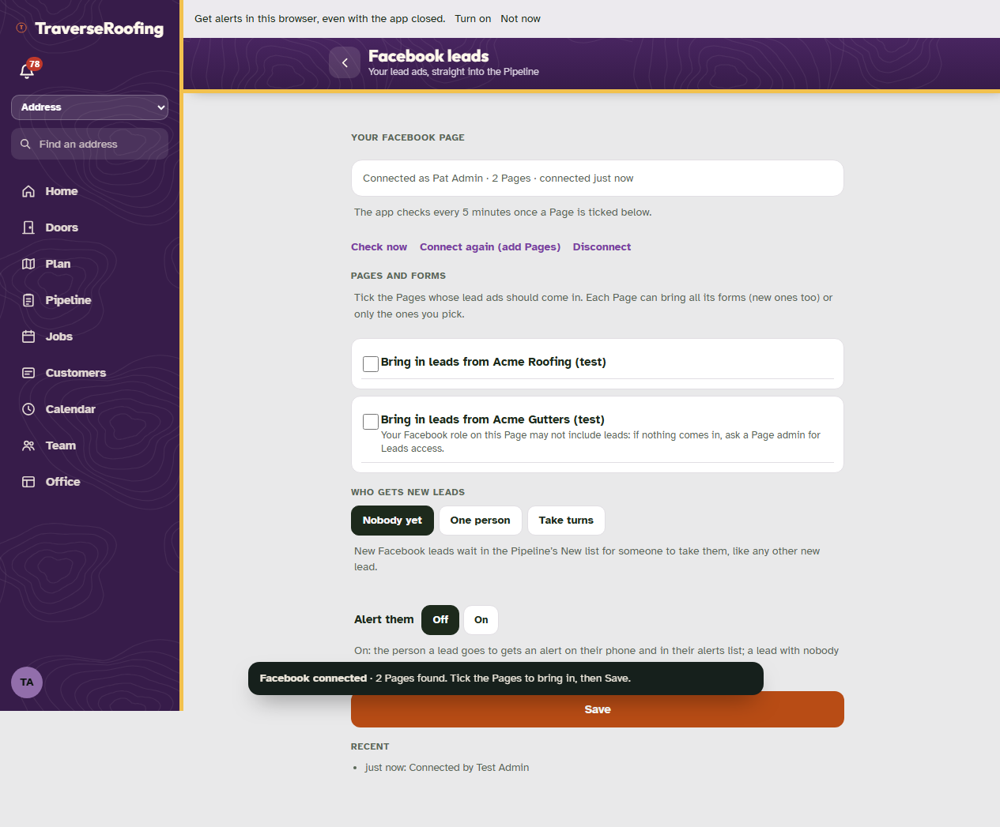
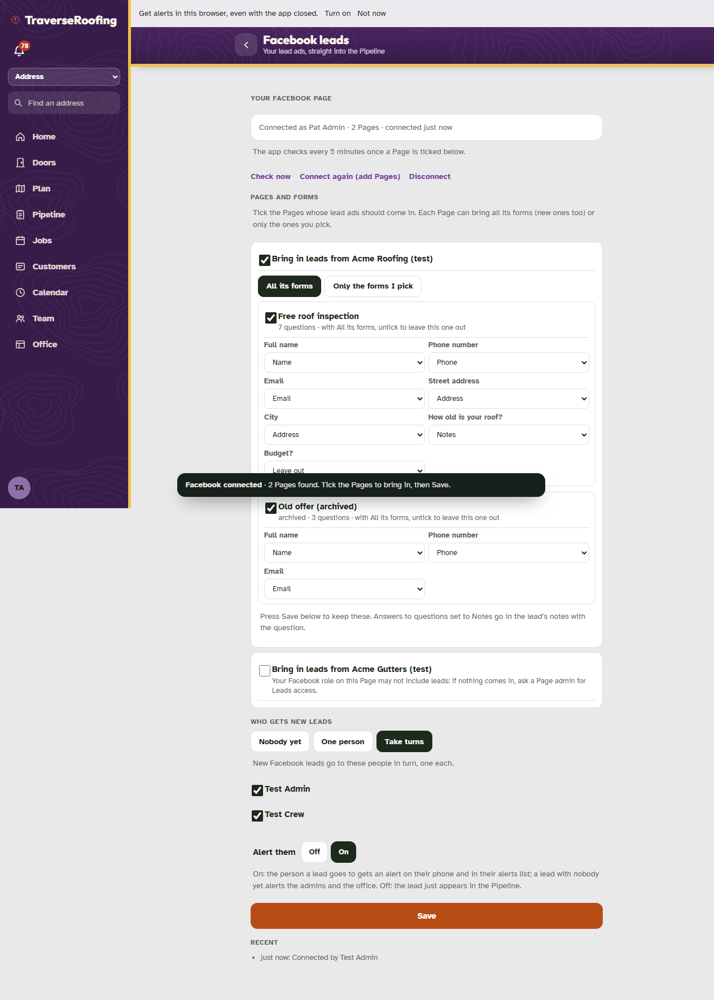
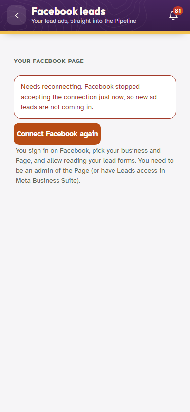
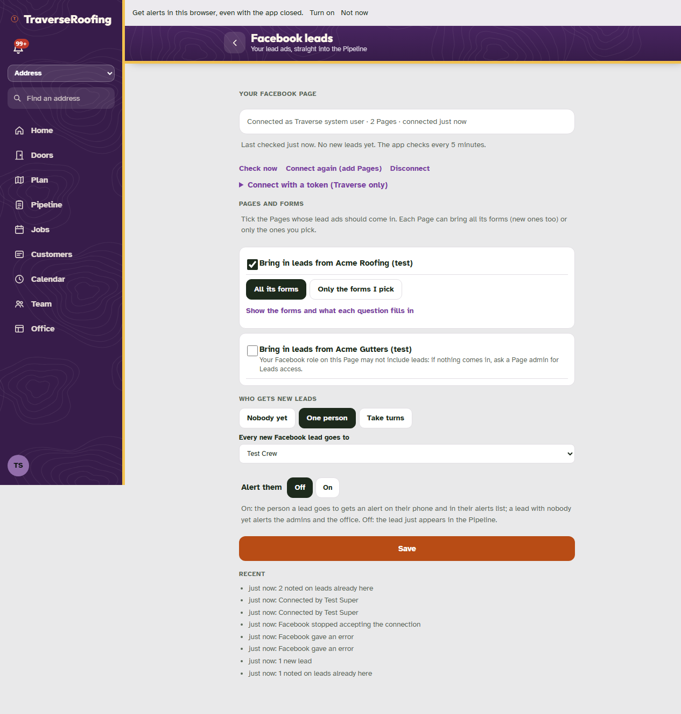
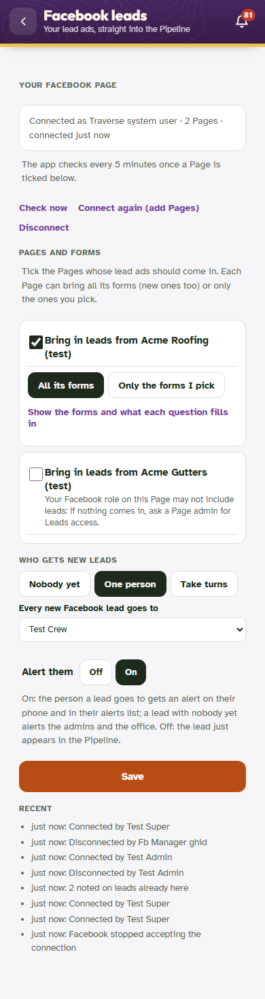
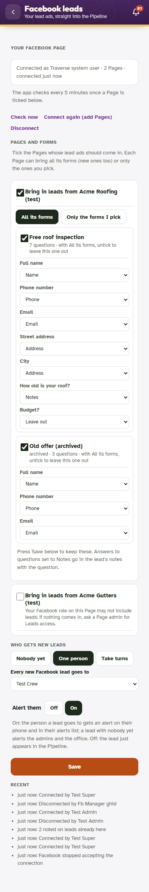

Setup › Facebook leads (editions and client installs)
30 Oct 2026. Taken by fbleads-test.mjs on the harness (a TraverseRoofing-like edition) against a local stand-in for Facebook. Made-up Pages and people.
1. Not connected (computer)Before Traverse's Meta app is on the server, Connect Facebook says "Not available yet".

2. Back from Facebook: connected, two Pages found (computer)Both Pages start unticked; the second is flagged because the person's role on it has no leads task.

3. A Page ticked, its forms and questions shown, Take turns between two people, alerts on (computer)Each question picks Name, Phone, Email, Address, Notes or Leave out; a sensible match is filled in.

4. Needs reconnecting (phone)Facebook stopped accepting the token: the admins were told once, the screen offers Connect Facebook again.

5. Traverse's own view (computer)The super admin also sees "Connect with a token (Traverse only)": what works before Meta's App Review.

6. Connected (phone)

7. The forms and question matching (phone)

8. The Setup checklist lists Facebook lead ads (computer)